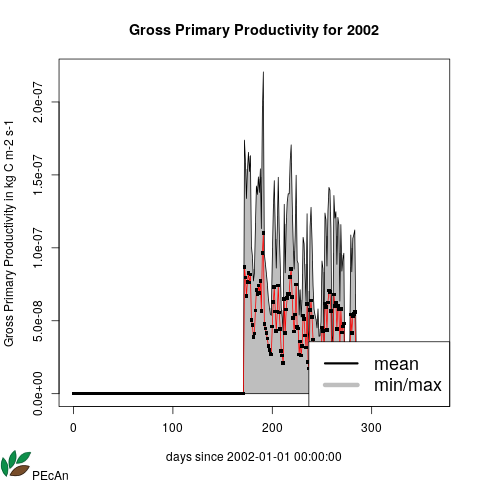

16.4 Examples:
Following are some example snippets to call the PEcAn API endpoints:
16.4.2 GET /api/ping
16.4.3 GET /api/status
16.4.3.1 R Snippet
res <- httr::GET("http://pecan.localhost/api/status")
print(jsonlite::fromJSON(rawToChar(res$content)))## $pecan_details$version
## [1] "1.7.0"
## $pecan_details$branch
## [1] "develop"
## $pecan_details$gitsha1
## [1] "unknown"
## $host_details$hostid
## [1] 99
## $host_details$hostname
## [1] ""
## $host_details$start
## [1] 99000000000
## $host_details$end
## [1] 99999999999
## $host_details$sync_url
## [1] ""
## $host_details$sync_contact
## [1] ""16.4.3.2 Python Snippet
response = requests.get("http://pecan.localhost/api/status")
print(json.dumps(response.json(), indent=2))## {
## "pecan_details": {
## "version": "1.7.0",
## "branch": "develop",
## "gitsha1": "unknown"
## },
## "host_details": {
## "hostid": 99,
## "hostname": "",
## "start": 99000000000,
## "end": 99999999999,
## "sync_url": "",
## "sync_contact": ""
## }
## }16.4.4 GET /api/models/
16.4.4.1 R Snippet
# Search model(s) with `model_name` containing "sip" & `revision` containing "ssr"
res <- httr::GET(
"http://pecan.localhost/api/models/?model_name=sip&revision=ssr&ignore_case=TRUE",
httr::authenticate("carya", "illinois")
)
print(jsonlite::fromJSON(rawToChar(res$content)))## $models
## model_id model_name revision
## 1 1000000022 SIPNET ssr
## $count
## [1] 116.4.4.2 Python Snippet
# Search model(s) with `model_name` containing "sip" & `revision` containing "ssr"
response = requests.get(
"http://pecan.localhost/api/models/?model_name=sip&revision=ssr&ignore_case=TRUE",
auth=HTTPBasicAuth('carya', 'illinois')
)
print(json.dumps(response.json(), indent=2))## {
## "models": [
## {
## "model_id": "1000000022",
## "model_name": "SIPNET",
## "revision": "ssr"
## }
## ],
## "count": 1
## }16.4.5 GET /api/models/{model_id}
16.4.5.1 R Snippet
# Fetch the details of PEcAn model with id = 1000000022
res <- httr::GET(
"http://pecan.localhost/api/models/1000000022",
httr::authenticate("carya", "illinois")
)
print(jsonlite::fromJSON(rawToChar(res$content)))## $modeltype_id
## [1] 3
## $model_type
## [1] "SIPNET"
## $model_id
## [1] 1000000022
## $model_name
## [1] "SIPNET"
## $revision
## [1] "ssr"
## $inputs
## input required
## 1 met TRUE
## 2 poolinitcond FALSE16.4.5.2 Python Snippet
# Fetch the details of PEcAn model with id = 1000000022
response = requests.get(
"http://pecan.localhost/api/models/1000000022",
auth=HTTPBasicAuth('carya', 'illinois')
)
print(json.dumps(response.json(), indent=2))## {
## "model_id": "1000000022",
## "model_name": "SIPNET",
## "revision": "ssr",
## "modeltype_id": 3,
## "model_type": "SIPNET"
## "inputs": [
## {
## "input": "met",
## "required": TRUE
## },
## {
## "input": "poolinitcond",
## "required": FALSE
## }
## ]
## }16.4.6 GET /api/sites/
16.4.6.1 R Snippet
# Search site(s) with `site_name` containing "willow"
res <- httr::GET(
"http://pecan.localhost/api/sites/?sitename=willow&ignore_case=TRUE",
httr::authenticate("carya", "illinois")
)
print(jsonlite::fromJSON(rawToChar(res$content)))## $sites
## id sitename
## 1 676 Willow Creek (US-WCr)
## 2 1108 Willow Creek (WC)-Chequamegon National Forest
## 3 1202 Tully_willow
## 4 1223 Saare SRF willow plantation
## 5 1000005151 Willow Creek (US-WCr)
## $count
## [1] 516.4.6.2 Python Snippet
# Search site(s) with `site_name` containing "willow"
response = requests.get(
"http://pecan.localhost/api/models/?sitename=willow&ignore_case=TRUE",
auth=HTTPBasicAuth('carya', 'illinois')
)
print(json.dumps(response.json(), indent=2))## {
## "sites": [
## {
## "id": 676,
## "sitename": "Willow Creek (US-WCr)"
## },
## {
## "id": 1108,
## "sitename": "Willow Creek (WC)-Chequamegon National Forest"
## },
## {
## "id": 1202,
## "sitename": "Tully_willow"
## },
## {
## "id": 1223,
## "sitename": "Saare SRF willow plantation"
## },
## {
## "id": 1000005151,
## "sitename": "Willow Creek (US-WCr)"
## }
## ],
## "count": 5
## }16.4.7 GET /api/sites/{site_id}
16.4.7.1 R Snippet
# Fetch the details of PEcAn site with id = 676
res <- httr::GET(
"http://pecan.localhost/api/sites/676",
httr::authenticate("carya", "illinois")
)
print(jsonlite::fromJSON(rawToChar(res$content)))## $id
## [1] 676
## $city
## [1] "Park Falls Ranger District"
## $state
## [1] "Wisconsin"
## $country
## [1] "US"
## $mat
## [1] 4
## $map
## [1] 815
## $soil
## [1] ""
## $som
## [1] "NA"
## $notes
## [1] "MF"
## $soilnotes
## [1] ""
## $sitename
## [1] "Willow Creek (US-WCr)"
## $greenhouse
[1] FALSE
## $sand_pct
## [1] 42.52
## $clay_pct
## [1] 20.17
## $time_zone
## [1] "America/Chicago"16.4.7.2 Python Snippet
# Fetch the details of PEcAn site with id = 676
response = requests.get(
"http://pecan.localhost/api/sites/676",
auth=HTTPBasicAuth('carya', 'illinois')
)
print(json.dumps(response.json(), indent=2))## {
## "id": 676,
## "city": "Park Falls Ranger District",
## "state": "Wisconsin",
## "country": "US",
## "mat": 4,
## "map": 815,
## "soil": "",
## "notes": "MF",
## "soilnotes": "",
## "sitename": "Willow Creek (US-WCr)",
## "greenhouse": false,
## "sand_pct": 42.52,
## "clay_pct": 20.17,
## "time_zone": "America/Chicago"
## }16.4.8 GET /api/pfts/
16.4.8.1 R Snippet
# Search pft(s) of "plant" type with `pft_name` containing "temperate" & belonging to `model_type` "SIPNET"
res <- httr::GET(
"http://pecan.localhost/api/pfts/?pft_name=temperate&pft_type=plant&model_type=sipnet&ignore_case=TRUE",
httr::authenticate("carya", "illinois")
)
print(jsonlite::fromJSON(rawToChar(res$content)))## $pfts
## model_type pft_id pft_name pft_type
## <chr> <S3: integer64> <chr> <chr>
## 1 SIPNET 41 temperate.deciduous plant
## 2 SIPNET 1000000105 temperate.deciduous.IF plant
## 3 SIPNET 1000000107 temperate.deciduous_SDA plant
## 4 SIPNET 1000000115 temperate.deciduous.ALL plant
## 5 SIPNET 1000000118 temperate.deciduous.ALL.NORMAL plant
## 6 SIPNET 2000000017 tundra.deciduous.NGEE_Arctic plant
## 7 SIPNET 2000000045 temperate.broadleaf.deciduous plant
## $count
## [1] 716.4.8.2 Python Snippet
# Search pft(s) of "plant" type with `pft_name` containing "temperate" & belonging to `model_type` "SIPNET"
response = requests.get(
"http://pecan.localhost/api/pfts/?pft_name=temperate&pft_type=plant&model_type=sipnet&ignore_case=TRUE",
auth=HTTPBasicAuth('carya', 'illinois')
)
print(json.dumps(response.json(), indent=2))## {
## "pfts": [
## {
## "model_type": "SIPNET",
## "pft_id": 41,
## "pft_name": "temperate.deciduous",
## "pft_type": "plant"
## },
## ...
## ],
## "count": 7
## }16.4.9 GET /api/pfts/{pft_id}
16.4.9.1 R Snippet
# Fetch the details of PEcAn PFT with id = 2000000045
res <- httr::GET(
"http://pecan.localhost/api/pfts/2000000045",
httr::authenticate("carya", "illinois")
)
print(jsonlite::fromJSON(rawToChar(res$content)))## $model_type
## [1] "SIPNET"
## $pft_id
## [1] 2000000045
## $pft_name
## [1] "temperate.broadleaf.deciduous"
## $definition
## [1] "SIPNET Temperate Deciduous PFT with priors on all parameters"
## $pft_type
## [1] "plant" 16.4.9.2 Python Snippet
# Fetch the details of PEcAn PFT with id = 2000000045
response = requests.get(
"http://pecan.localhost/api/pfts/2000000045",
auth=HTTPBasicAuth('carya', 'illinois')
)
print(json.dumps(response.json(), indent=2))## {
## "model_type": "SIPNET",
## "pft_id": 2000000045,
## "pft_name": "temperate.broadleaf.deciduous",
## "definition": "SIPNET Temperate Deciduous PFT with priors on all parameters",
## "pft_type": "plant"
## }16.4.10 GET /api/formats/
16.4.10.1 R Snippet
# Search format(s) with name containing 'ameriflux' & mime type containing 'csv'
res <- httr::GET(
"http://pecan.localhost/api/formats/?format_name=ameriflux&mimetype=csv&ignore_case=TRUE",
httr::authenticate("carya", "illinois")
)
print(jsonlite::fromJSON(rawToChar(res$content)))## $formats
## mimetype format_id format_name
## 1 text/csv 19 AmeriFlux.level4.h
## 2 text/csv 20 AmeriFlux.level4.d
## 3 text/csv 21 AmeriFlux.level4.w
## 4 text/csv 22 AmeriFlux.level4.m
## 5 text/csv 35 AmeriFlux.level2.h
## 6 text/csv 36 AmeriFlux.level3.h
## $count
## [1] 616.4.10.2 Python Snippet
# # Search format(s) with name containing 'ameriflux' & mime type containing 'csv'
response = requests.get(
"http://pecan.localhost/api/formats/?format_name=ameriflux&mimetype=csv&ignore_case=TRUE",
auth=HTTPBasicAuth('carya', 'illinois')
)
print(json.dumps(response.json(), indent=2))## {
## "formats": [
## {
## "mimetype": "text/csv",
## "format_id": 19,
## "format_name": "AmeriFlux.level4.h"
## },
## {
## "mimetype": "text/csv",
## "format_id": 20,
## "format_name": "AmeriFlux.level4.d"
## },
## ...
## ],
## "count": 6
## }
16.4.11 GET /api/formats/{format_id}
16.4.11.1 R Snippet
# Fetch the details of PEcAn format with id = 19
res <- httr::GET(
"http://pecan.localhost/api/formats/19",
httr::authenticate("carya", "illinois")
)
print(jsonlite::fromJSON(rawToChar(res$content)))## $mimetype
## [1] "text/csv"
## $format_id
## [1] 19
## $name
## [1] "AmeriFlux.level4.h"
## $notes
## [1] "Half-hourly AmeriFlux level 4 gap filled, partitioned, and flagged flux tower data. Variables description: Level 4 data are obtained from the level 3 products, data are ustar filtered, gap-filled using different methods (ANN and MDS) and partitioned (i.e. NEE, GPP, and Re). Flags with information regarding quality of the original and gapfilled data are added. Missing values: -9999."
## $header
## [1] ""
## $format_variables
## description name unit
## 1 Latent heat flux LE_f W m-2
## 2 Sensible heat flux H_f W m-2
## 3 air temperature Ta_f degrees C
## 4 Vapor Pressure Deficit VPD_f Pa
## 5 Cumulative ecosystem respiration over a specified time step Reco umol C02 m-2 s-1
## 6 Net ecosystem exchange NEE_st_fMDS umol C m-2 s-116.4.11.2 Python Snippet
# Fetch the details of PEcAn format with id = 19
response = requests.get(
"http://pecan.localhost/api/formats/19",
auth=HTTPBasicAuth('carya', 'illinois')
)
print(json.dumps(response.json(), indent=2))## {
## "mimetype": "text/csv",
## "format_id": 19,
## "name": "AmeriFlux.level4.h",
## "notes": "Half-hourly AmeriFlux level 4 gap filled, partitioned, and flagged flux tower data. Variables description: ## Level 4 data are obtained from the level 3 products, data are ustar filtered, gap-filled using different methods (ANN and ## MDS) and partitioned (i.e. NEE, GPP, and Re). Flags with information regarding quality of the original and gapfilled data ## are added. Missing values: -9999.",
## "header": "",
## "format_variables": [
## {
## "description": "Latent heat flux",
## "name": "LE_f",
## "unit": "W m-2"
## },
## ...
## ]
## }16.4.12 GET /api/inputs/
16.4.12.1 R Snippet
# Get the inputs needed for a workflow with model_id = 1000000022 & site_id = 676
res <- httr::GET(
"http://pecan.localhost/api/inputs/?model_id=1000000022&site_id=676",
httr::authenticate("carya", "illinois")
)
print(jsonlite::fromJSON(rawToChar(res$content)))## $inputs
## sitename model_name revision tag hostname file_name format_name mimetype
## 1 Willow Creek (US-WCr) SIPNET ssr met ebi-forecast.igb.illinois.edu wcr.clim Sipnet.climna text/csv
## 2 Willow Creek (US-WCr) SIPNET ssr met docker wcr.clim Sipnet.climna text/csv
## file_path id input_name start_date end_date
## 1 /home/share/data/dbfiles/ 235 2000-01-01 06:00:00 2007-01-01 05:59:00
## 2 /data/sites/willow 2000000001 1998-01-01 00:00:00 2006-12-31 00:00:00
## $count
## [1] 2# Get the inputs needed for a workflow with format_id = 5000000002 (AMERIFLUX_BASE_HH) & host_id = 99000000001 (docker)
res <- httr::GET(
"http://pecan.localhost/api/inputs/?format_id=5000000002&host_id=99000000001",
httr::authenticate("carya", "illinois")
)
print(jsonlite::fromJSON(rawToChar(res$content)))## $inputs
## sitename mimetype format_name hostname file_name
## 1 Niwot Ridge Forest/LTER NWT1 (US-NR1) text/csv AMERIFLUX_BASE_HH docker AMF_US-NR1_BASE_HH_15-5
## file_path id input_name start_date end_date
## 1 /data/dbfiles/AmerifluxLBL_site_0-772 1000011238 AmerifluxLBL_site_0-772 1998-01-01 2016-12-31
## $count
## [1] 116.4.12.2 Python Snippet
# Get the inputs needed for a workflow with model_id = 1000000022 & site_id = 676
response = requests.get(
"http://pecan.localhost/api/inputs/?model_id=1000000022&site_id=676",
auth=HTTPBasicAuth('carya', 'illinois')
)
print(json.dumps(response.json(), indent=2))## {
## "inputs": [
## {
## "sitename": "Willow Creek (US-WCr)",
## "model_name": "SIPNET",
## "revision": "ssr",
## "tag": "met",
## "hostname": "ebi-forecast.igb.illinois.edu",
## "file_name": "wcr.clim",
## "format_name": "Sipnet.climna",
## "mimetype": "text/csv",
## "file_path": "/home/share/data/dbfiles/",
## "id": 235,
## "input_name": "",
## "start_date": "2000-01-01 06:00:00",
## "end_date": "2007-01-01 05:59:00"
## },
## ...
## ],
## "count": 2
## }# Get the inputs needed for a workflow with format_id = 5000000002 (AMERIFLUX_BASE_HH) & host_id = 99000000001 (docker)
response = requests.get(
"http://pecan.localhost/api/inputs/?format_id=5000000002&host_id=99000000001",
auth=HTTPBasicAuth('carya', 'illinois')
)
print(json.dumps(response.json(), indent=2))## {
## "inputs": [
## {
## "sitename": "Niwot Ridge Forest/LTER NWT1 (US-NR1)",
## "hostname": "docker",
## "file_name": "AMF_US-NR1_BASE_HH_15-5",
## "format_name": "AMERIFLUX_BASE_HH",
## "mimetype": "text/csv",
## "file_path": "/data/dbfiles/AmerifluxLBL_site_0-772",
## "id": 1000011238,
## "input_name": "AmerifluxLBL_site_0-772",
## "start_date": "1998-01-01",
## "end_date": "2016-12-31"
## }
## ],
## "count": 1,
## }16.4.13 GET /api/inputs/{input_id}
16.4.13.1 R Snippet
# Download the input file with id = 99000000003
res <- httr::GET(
"http://pecan.localhost/api/inputs/99000000003",
httr::authenticate("carya", "illinois")
)
writeBin(res$content, "test.2002.nc")
# Download the file 'fraction.plantation' from the input directory with id = 295
res <- httr::GET(
"http://pecan.localhost/api/inputs/295?filename=fraction.plantation",
httr::authenticate("carya", "illinois")
)
writeBin(res$content, "test.fraction.plantation")16.4.13.2 Python Snippet
# Download the input file for with id = 99000000003
response = requests.get(
"http://pecan.localhost/api/inputs/99000000003",
auth=HTTPBasicAuth('carya', 'illinois')
)
with open("test.2002.nc", "wb") as file:
file.write(response.content)
# Download the file 'fraction.plantation' from the input directory with id = 295
response = requests.get(
"http://pecan.localhost/api/inputs/295?filename=fraction.plantation",
auth=HTTPBasicAuth('carya', 'illinois')
)
with open("test.2002.nc", "wb") as file:
file.write(response.content)16.4.14 GET /api/workflows/
16.4.14.1 R Snippet
# Get workflow(s) that use `model_id` = 1000000022 [SIPNET] & `site_id` = 676 [Willow Creek (US-WCr)]
res <- httr::GET(
"http://pecan.localhost/api/workflows/?model_id=1000000022&site_id=676",
httr::authenticate("carya", "illinois")
)
print(jsonlite::fromJSON(rawToChar(res$content)))## $workflows
## id folder started_at site_id model_id hostname start_date end_date
## 1 1000009900 /fs/data2/output//PEcAn_1000009900 2018-11-09 08:56:37 676 1000000022 geo.bu.edu 2004-01-01 2004-12-31
## 2 1000009172 /fs/data2/output//PEcAn_1000009172 2018-04-11 18:14:52 676 1000000022 test-pecan.bu.edu 2004-01-01 2004-12-31
## ...
## $count
## [1] 516.4.14.2 Python Snippet
# Get workflow(s) that use `model_id` = 1000000022 [SIPNET] & `site_id` = 676 [Willow Creek (US-WCr)]
response = requests.get(
"http://pecan.localhost/api/workflows/?model_id=1000000022&site_id=676",
auth=HTTPBasicAuth('carya', 'illinois')
)
print(json.dumps(response.json(), indent=2))## {
## "workflows": [
## {
## "id": 1000009172,
## "folder": "/fs/data2/output//PEcAn_1000009900",
## "started_at": "2018-11-09 08:56:37",
## "site_id": 676,
## "model_id": 1000000022,
## "hostname": "geo.bu.edu",
## "start_date": "2004-01-01",
## "end_date": "2004-12-31"
## },
## ...
## ],
## "count": 5
## }16.4.15 POST /api/workflows/
16.4.15.1 R Snippet
# Submit a workflow in XML format for execution
xmlFile <- "pecan/tests/api.sipnet.xml"
xml_string <- paste0(xml2::read_xml(xmlFile))
res <- httr::POST(
"http://pecan.localhost/api/workflows/",
httr::authenticate("carya", "illinois"),
httr::content_type("application/xml"),
body = xml_string
)
print(jsonlite::fromJSON(rawToChar(res$content)))## $workflow_id
## [1] 99000000001
## $status
## [1] "Submitted successfully"16.4.15.2 Python Snippet
# Submit a workflow in XML format for execution
xml_file = "pecan/tests/api.sipnet.xml"
root = xml.etree.ElementTree.parse(xml_file).getroot()
response = requests.post(
"http://pecan.localhost/api/workflows/",
auth=HTTPBasicAuth('carya', 'illinois'),
headers = {'Content-Type': 'application/xml'},
data = xml.etree.ElementTree.tostring(root, encoding='unicode', method='xml')
)
print(json.dumps(response.json(), indent=2))## {
## "workflow_id": "99000000001",
## "status": "Submitted successfully"
## }16.4.16 GET /api/workflows/{id}
16.4.16.1 R Snippet
# Get details of workflow with `id` = '1000009172'
res <- httr::GET(
"http://pecan.localhost/api/workflows/1000009172",
httr::authenticate("carya", "illinois")
)
print(jsonlite::fromJSON(rawToChar(res$content)))## $id
## [1] "1000009172"
## $folder
## [1] "/fs/data2/output//PEcAn_1000009172"
## $hostname
## [1] "test-pecan.bu.edu"
## $user_id
## [1] "NA"
## $properties
## $properties$end
## [1] "2004/12/31"
## $properties$pft
## $properties$pft[[1]]
## [1] "soil.IF"
## $properties$pft[[2]]
## [1] "temperate.deciduous.IF"
## $properties$email
## [1] ""
## $properties$notes
## [1] ""
## $properties$start
## [1] "2004/01/01"
## $properties$siteid
## [1] "676"
## $properties$modelid
## [1] "1000000022"
## $properties$hostname
## [1] "test-pecan.bu.edu"
## $properties$sitename
## [1] "WillowCreek(US-WCr)"
## $properties$input_met
## [1] "AmerifluxLBL.SIPNET"
## $properties$pecan_edit
## [1] "on"
## $properties$sitegroupid
## [1] "1000000022"
## $properties$fluxusername
## [1] "pecan"
## $properties$input_poolinitcond
## [1] "-1"16.4.16.2 Python Snippet
# Get details of workflow with `id` = '1000009172'
response = requests.get(
"http://pecan.localhost/api/workflows/1000009172",
auth=HTTPBasicAuth('carya', 'illinois')
)
print(json.dumps(response.json(), indent=2))## {
## "id": "1000009172",
## "folder": "/fs/data2/output//PEcAn_1000009172",
## "hostname": "test-pecan.bu.edu",
## "user_id": "NA",
## "properties": {
## "end": "2004/12/31",
## "pft": [
## "soil.IF",
## "temperate.deciduous.IF"
## ],
## "email": "",
## "notes": "",
## "start": "2004/01/01",
## "siteid": "676",
## "modelid": "1000000022",
## "hostname": "test-pecan.bu.edu",
## "sitename": "WillowCreek(US-WCr)",
## "input_met": "AmerifluxLBL.SIPNET",
## "pecan_edit": "on",
## "sitegroupid": "1000000022",
## "fluxusername": "pecan",
## "input_poolinitcond": "-1"
## }
## }16.4.17 GET /api/workflows/{id}/status
16.4.17.1 R Snippet
# Get list of run belonging to the workflow with `workflow_id` = '99000000001'
res <- httr::GET(
"http://pecan.localhost/api/workflows/99000000001/status",
httr::authenticate("carya", "illinois")
)
print(jsonlite::fromJSON(rawToChar(res$content)))## $workflow_id
## [1] "99000000001"
## $status
## [1] "TRAIT 2020-07-22 07:02:33 2020-07-22 07:02:35 DONE "
## [2] "META 2020-07-22 07:02:35 2020-07-22 07:02:38 DONE "
## [3] "CONFIG 2020-07-22 07:02:38 2020-07-22 07:02:40 DONE "
## [4] "MODEL 2020-07-22 07:02:40 2020-07-22 07:04:07 DONE "
## [5] "OUTPUT 2020-07-22 07:04:07 2020-07-22 07:04:08 DONE "
## [6] "ENSEMBLE 2020-07-22 07:04:08 2020-07-22 07:04:09 DONE "
## [7] "SENSITIVITY 2020-07-22 07:04:09 2020-07-22 07:04:16 DONE "
## [8] "FINISHED 2020-07-22 07:04:16 2020-07-22 07:04:16 DONE "16.4.17.2 Python Snippet
# Get list of run belonging to the workflow with `workflow_id` = '99000000001'
response = requests.get(
"http://pecan.localhost/api/workflows/99000000001/status",
auth=HTTPBasicAuth('carya', 'illinois')
)
print(json.dumps(response.json(), indent=2))## {
## "workflow_id": "99000000001",
## "status": [
## "TRAIT 2020-07-22 07:02:33 2020-07-22 07:02:35 DONE ",
## "META 2020-07-22 07:02:35 2020-07-22 07:02:38 DONE ",
## "CONFIG 2020-07-22 07:02:38 2020-07-22 07:02:40 DONE ",
## "MODEL 2020-07-22 07:02:40 2020-07-22 07:04:07 DONE ",
## "OUTPUT 2020-07-22 07:04:07 2020-07-22 07:04:08 DONE ",
## "ENSEMBLE 2020-07-22 07:04:08 2020-07-22 07:04:09 DONE ",
## "SENSITIVITY 2020-07-22 07:04:09 2020-07-22 07:04:16 DONE ",
## "FINISHED 2020-07-22 07:04:16 2020-07-22 07:04:16 DONE "
## ]
## }16.4.18 GET /api/workflows/{id}/file/{filename}
16.4.18.1 R Snippet
# Download the 'ensemble.ts.99000000017.NPP.2002.2002.Rdata' output file for the workflow with id = 99000000031
res <- httr::GET(
"http://pecan.localhost/api/workflows/99000000031/file/ensemble.ts.99000000017.NPP.2002.2002.Rdata",
httr::authenticate("carya", "illinois")
)
writeBin(res$content, "test.ensemble.ts.99000000017.NPP.2002.2002.Rdata")16.4.18.2 Python Snippet
# Download the 'ensemble.ts.99000000017.NPP.2002.2002.Rdata' output file for the workflow with id = 99000000031
response = requests.get(
"http://pecan.localhost/api/workflows/99000000031/file/ensemble.ts.99000000017.NPP.2002.2002.Rdata",
auth=HTTPBasicAuth('carya', 'illinois')
)
with open("test.ensemble.ts.99000000017.NPP.2002.2002.Rdata", "wb") as file:
file.write(response.content)16.4.19 GET /api/runs/
16.4.19.1 R Snippet
# Get list of run belonging to the workflow with `workflow_id` = '1000009172'
res <- httr::GET(
"http://pecan.localhost/api/runs/?workflow_id=1000009172",
httr::authenticate("carya", "illinois")
)
print(jsonlite::fromJSON(rawToChar(res$content)))## $runs
## runtype ensemble_id workflow_id id model_id site_id parameter_list start_time
## finish_time
## 1 ensemble 1000017624 1000009172 1002042201 1000000022 796 ensemble=1 2005-01-01
## 00:00:00 2011-12-31 00:00:00
## ...
## $count
## [1] 5016.4.19.2 Python Snippet
# Get list of run belonging to the workflow with `workflow_id` = '1000009172'
response = requests.get(
"http://pecan.localhost/api/runs/?workflow_id=1000009172",
auth=HTTPBasicAuth('carya', 'illinois')
)
print(json.dumps(response.json(), indent=2))## {
## "runs": [
## {
## "runtype": "ensemble",
## "ensemble_id": 1000017624,
## "workflow_id": 1000009172,
## "id": 1002042201,
## "model_id": 1000000022,
## "site_id": 796,
## "parameter_list": "ensemble=1",
## "start_time": "2005-01-01",
## "finish_time": "2011-12-31"
## },
## ...
## ]
## "count": 50,
## "next_page": "http://pecan.localhost/api/workflows/?workflow_id=1000009172&offset=50&limit=50"
## }16.4.20 GET /api/runs/{run_id}
16.4.20.1 R Snippet
# Get details of run belonging with `id` = '99000000282'
res <- httr::GET(
"http://pecan.localhost/api/runs/99000000282",
httr::authenticate("carya", "illinois")
)
print(jsonlite::fromJSON(rawToChar(res$content)))## $runtype
## [1] "sensitivity analysis"
## $ensemble_id
## [1] 99000000016
## $workflow_id
## [1] 99000000031
## $id
## [1] 99000000282
## $model_id
## [1] 1000000014
## $site_id
## [1] 772
## $start_time
## [1] "2002-01-01"
## $finish_time
## [1] "2002-12-31"
## $parameter_list
## [1] "quantile=MEDIAN,trait=all,pft=temperate.coniferous"
## $started_at
## [1] "2020-07-22 07:02:40"
## $finished_at
## [1] "2020-07-22 07:02:57"
## $inputs
## $inputs$info
## [1] "README.txt"
## $inputs$others
## [1] "sipnet.clim" "sipnet.in" "sipnet.param" "sipnet.param-spatial"
## $outputs
## $outputs$logfile
## [1] "logfile.txt"
## $outputs$info
## [1] "README.txt"
## $outputs$years
## $outputs$years$`2002`
## $outputs$years$`2002`$data
## [1] "2002.nc"
## $outputs$years$`2002`$variables
## $outputs$years$`2002`$variables$GPP
## [1] "Gross Primary Productivity"
## $outputs$years$`2002`$variables$NPP
## [1] "Net Primary Productivity"
## ...16.4.20.2 Python Snippet
# Get details of run with `id` = '1002042201'
response = requests.get(
"http://pecan.localhost/api/runs/1002042201",
auth=HTTPBasicAuth('carya', 'illinois')
)
print(json.dumps(response.json(), indent=2))## {
## "runtype": "ensemble",
## "ensemble_id": 1000017624,
## "workflow_id": 1000009172,
## "id": 1002042201,
## "model_id": 1000000022,
## "site_id": 796,
## "parameter_list": "ensemble=1",
## "start_time": "2005-01-01",
## "finish_time": "2011-12-31",
## "inputs": {
## "info": "README.txt",
## "others": [
## "sipnet.clim",
## "sipnet.in",
## "sipnet.param",
## "sipnet.param-spatial"
## ]
## }
## "outputs": {
## "logfile": "logfile.txt",
## "info": "README.txt",
## "years": {
## "2002": {
## "data": "2002.nc",
## "variables": {
## "GPP": "Gross Primary Productivity",
## "NPP": "Net Primary Productivity",
## ...
## }
## }
## }
## }
## }16.4.21 GET /api/runs/{run_id}/input/{filename}
16.4.22 GET /api/runs/{run_id}/output/{filename}
16.4.23 GET /api/runs/{run_id}/graph/{year}/{y_var}
16.4.23.1 R Snippet
# Plot the Gross Primary Productivity vs Time for the run with ID `99000000282` for the year 2002
res <- httr::GET(
"http://pecan.localhost/api/runs/99000000282/graph/2002/GPP",
httr::authenticate("carya", "illinois")
)
writeBin(res$content, "test.png")
16.4.23.2 Python Snippet
# Plot the Gross Primary Productivity vs Time for the run with ID `99000000282` for the year 2002
response = requests.get(
"http://pecan.localhost/api/runs/99000000282/graph/2002/GPP",
auth=HTTPBasicAuth('carya', 'illinois')
)
with open("test.png", "wb") as file:
file.write(response.content)